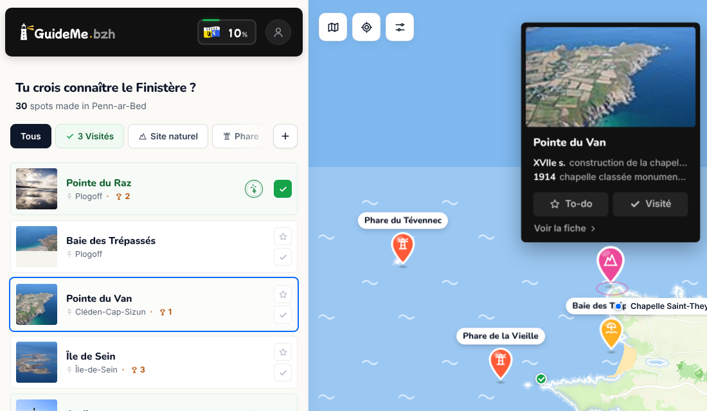
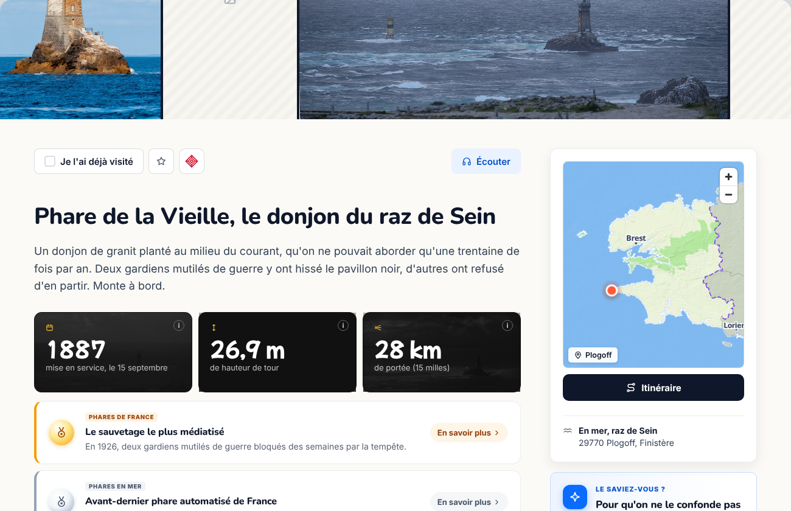
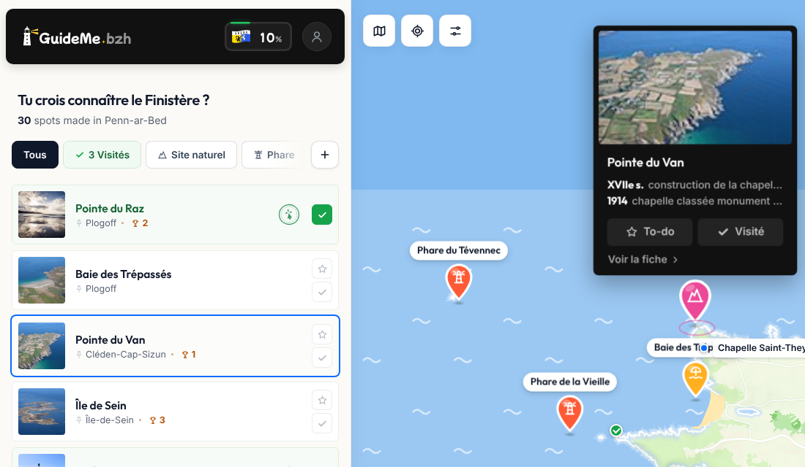
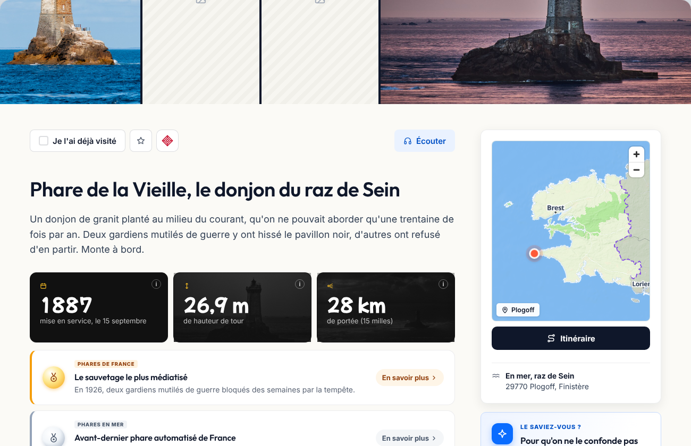
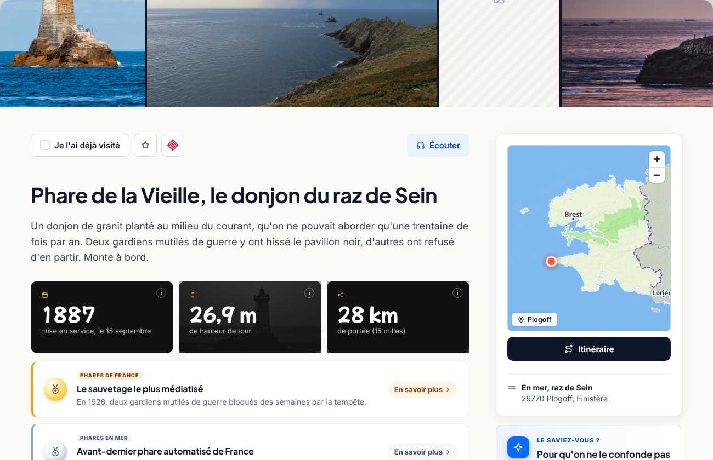

Bouts arrondis comme Mochiy, mais sage et très lisible. La plus « friendly », cousine directe du logo.


Géométrique et douce, ronds parfaits. Moderne et légère, avec un petit côté jeu.


La plus proche d'une police système, en plus caractérisée. Sérieuse, éditoriale, très nette en petit.
